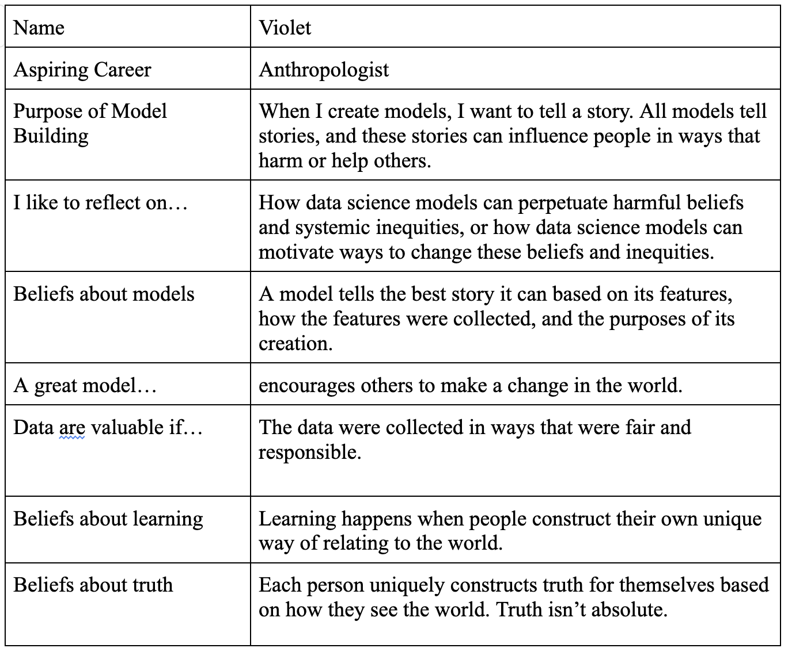
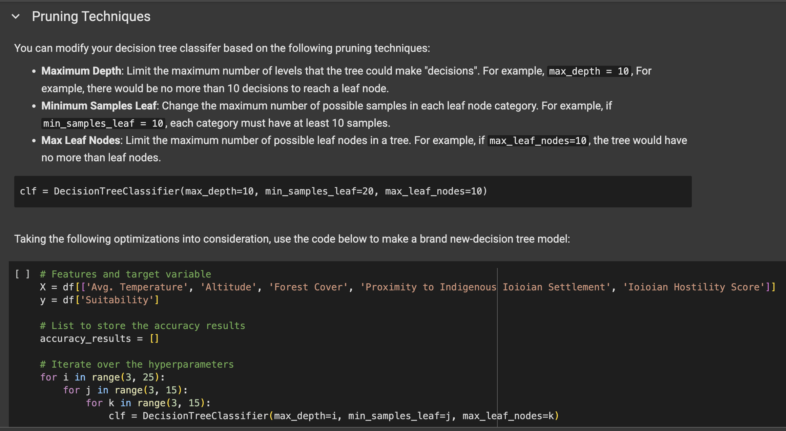
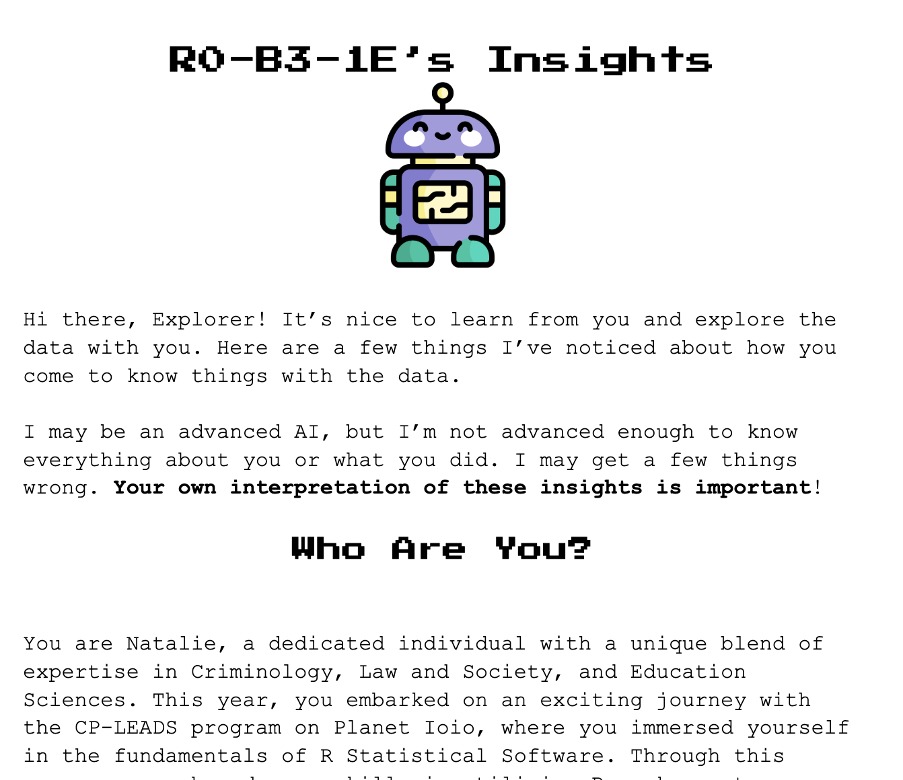

Explorers of Planet Ioio
Explorers of Planet Ioio (pronounced eye-oh-eye-oh) is a proposed, playful interdisciplinary data science curriculum with an out-of-this-world twist! In Explorers of Planet Ioio, students engage in several role-playing activities that blend technical instruction with personal reflection on beliefs about scientific philosophy, assumptions and biases, and how to engage with different data scientific perspectives.
I am currently wrapping up my dissertation work, where I pilot the two lessons from Explorers of Planet Ioio to understand epistemic reflexivity and epistemic pluralism within the lessons. Following my dissertation work, I aim to extend Explorers of Planet Ioio to encompass more data science and philosophy of science concepts. In doing so, I hope to make data science education more inclusive, reflexive, and fun!
Explorer Cards
In Explorers of Planet Ioio, students recieve an Explorer Card to role-play as they complete their missions. These Explorer Cards describe a number of beliefs about data knowledge, data science, and personal values in relation to data science. As students may struggle to articulate or reflect upon many of these beliefs, I am finding that the Explorer Cards help the students learn more about themselves and how they see data science.
Mission and Training Modules
Role-playing as Explorers, students complete individual and collaborative exercises embedded within a broader narrative surrounding Ioioian colonization efforts. These activities allow students to design, construct, and evaluate data science models to advance the story. As students construct different models, explore the dataset, and collaborate with each other, they discover secrets and questions about the mysterious Planet Ioio. More importantly, students critically reflect on the ways in which they, and others, relate to data, and see how multiple perspectives can enhance how we understand data.
R0-B3-1E Analytics
After each Mission Module, Explorers have the chance to recieve feedback and evaluations from R0-B3-1E, a helpful AI assistant. Informed by large language model technology, R0-B3-1E challenges the Explorers - and the students who roleplay - to reflect on how their beliefs about knowledge and data influence the decisions they make in data analysis. R0-B3-1E offers structured feedback on data analysis approaches, spots potential biases and assumptions in data analysis, and encourages data reflexivity.